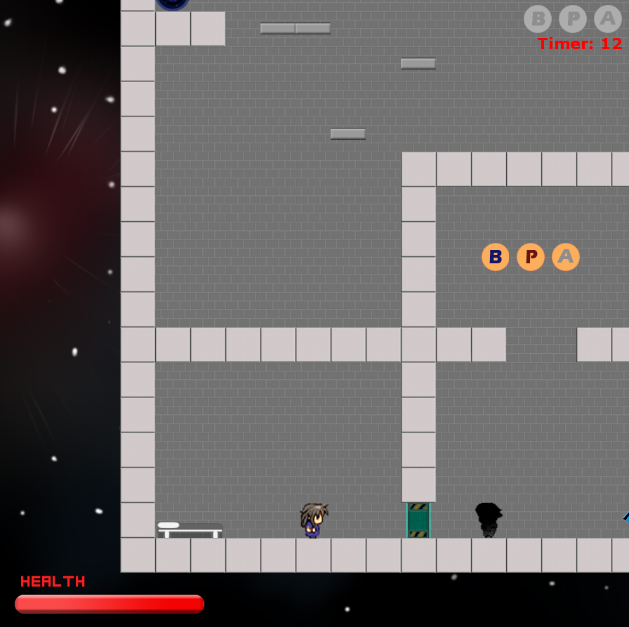

Senior Work Samples
JuniorSorting Algorithms – Organizing Data
November 3, 2017
Click Here To Open PDF
SUMMARY:During the start of my senior year in Programming and Web Development, I implemented multiple sorting algorithms to help organize data. First, I gathered information on nine different types of sorting algorithms in Java online. Next, I placed each example on one Java file while ensuring there were no errors. Afterwards, I created a Launcher Java file that would be able to run the file with the algorithms separately. Lastly, I altered my code to include each code’s execution time for multiple array sizes. With the knowledge of these sorts, I can efficiently sort any amount of information I may possess.
BACKGROUND:
In order to successfully fulfill this project, I needed to recollect the coding skills that I learned through my sophomore and junior year. I also needed to be familiar with the Java IDE that I used for the project. The programming topics associated with the project are the use of multiple classes and working with methods. It is assumed in this project that the reader has some knowledge of these topics.
SOFTWARE:- Java IDE (Eclipse Neon is used in this example)
- Any browser with access to the internet
To begin the project, you need to research the different types of sorting algorithms. You will only be working with nine sorts for this, although there are much more to be found on the internet. To begin the research, open your preferred internet browser. Then, use various search engines to find information about nine sorting algorithms in Java. In this case, we researched bubble, bucket, insertion, merge, heap, quick, selection, counting, and shell sorts. Once you get a general idea about what each sort is, take notes on the space complexity and big O notation for them. This will not be directly used within the project, but it will be helpful to know for the conclusion and objective of the project. Afterwards, find an example of source code for each type of sort. I copied them into notepad and saved them as text files just to have them ready for the next section of the task.
For the next segment of this assignment, the sorting algorithms are to be put into one Java file. To complete this project, you first need to open up your Java IDE and create a Class file either within an existing Java project or in a new one. Make sure this class file has no main method. Once the file is created, copy and paste in all of the Java methods for each sorting algorithm. If you copied your snippets of code correctly, you should not have any errors within your code. But in most cases, there will be variable or method names that conflict with each other. Parse through the code that you manufactured and search for any errors in your code. After this, look through the methods that delete / change any methods that you do not need to implement (aka duplicate methods or methods that serve no purpose). Lastly, make sure you keep note of which methods start each sort and that a method to display the sorts are present. You will need them for the next section.
By this point, you may realize that there is no way to actually test the functionality of this code, since there is no main method to run the program. We will be creating a second class in order to run the logic presented in the class filled with the nine sorting algorithms. Create a second class within the same package as the first one you forged. This one will have a main method in it. In the main class, create an array with random numbers inside it (it does not matter if the values are inputted manually or randomly). In the main method of this class, create a new array object that will hold the sorted values of the original array. Then, call the methods from the other class that initiates each sort. After initiating each sort, display the array to show that each sort works. Once you know each sort is working properly, this part of the section is complete.
With the sorts working to their potential, you can now alter this code to see which sort is the most efficient. To find out the times, you can implement System.nanoTime to record the time it takes for each array sort. First off, create a new array (I called it “sizes”) filled with different array sizes. I used 10; 100; 1,000; 10,000; and 100,000. Next, create a method in the SortingAlgorithm class, create a method to randomly populate the array with values based on the size. Next, in the main class, delete all displayArray instances. If you use large arrays such as 100,000 displaying all of the values could potentially crash the console. Then, put all of the sorting algorithms into a loop. Each iteration of the loop should populate and sort an array with one of the sizes specified in the size array you created. To measure the time, make a long variable on the line before each sort called startTime. Make it equal to System.nanoTime(). Then, create another long variable called endTime equal to System.nanoTime as well. Afterwards, print the difference between the endTime and startTime to show the execution time for said sorting algorithm. Repeat this for each sorting algorithm and the project should be complete.
RESULTS:After the completion of each project, test cases were run in order to double check the precision of the code compared to the expected result I imagined. For most of these projects, the cases were fairly simple (the first project I ran the code to test it). I only needed to change the x coordinates and the y coordinates of the stick figure when referencing the method. With these cases, I searched for two things in particular: ensuring the figure appeared and that all of the parts linked together despite the x and y given. With the knowledge bestowed upon me, this can lead me into understanding and coding projects in a much simpler way than I knew before. Thankfully, the results I expected almost perfectly correlated with what actually occurred.
used in the project.
By the end of the project, you should have a few sorting algorithms that show their execution times in the console. This activity was meant to teach how to implement methods from other classes, how to use certain sorting methods, and how to find out which sorting algorithm to use for each size. With this knowledge, sorting through small and large amounts of data will be much easier.
A snippet of code in the MainClass.
Software Engineering – From Idea to Interface
February 12, 2018
Click Here To Open PDF
SUMMARY:Throughout a majority of my senior year in Programming and Web Development, Yannick Almeida, Ethan Guillotte and I created a 2D platformer in Java. First, we brainstormed concepts of the game and jot down notes for what the game would be like. Next, my team and I created the core functions for the game based around the concepts that we initially forged. Lastly, we started implementing a story and a style to our game to make the appeal for the players of our game. With this basic layout in mind, we were able to create a game for a virtual software engineering event for Business Professionals of America.
BACKGROUND:
All of us started the project with no prior experience to creating games from scratch in Java. There were many times where we were stumped or had to backtrack in order to make the game more efficient for the hardware to handle. In order to solve these problems, we drew many diagrams and spent a lot of time consulting each other and our programming teacher. We also had this project on GitHub in order for us to work on the game from school and from home together. We spent countless hours working on the project both individually and as a group.
SOFTWARE:
- Java IDE (Eclipse Oxygen is used for this project)
- Slick2D Jar Libraries
- Mail Jar Libraries
- Any browser with access to the internet
- Adobe Photoshop
- Paint Tool SAI

To initially create the concept of the idea, we sat down at a table throwing ideas out into the open and brainstorming how we could fit it into a 2D platformer. Then, once we got an idea, we started to base our thoughts around the concept, which happened to be a platformer in space. The function of reversing the player’s gravity was introduced, and everyone accepted the idea. Once this unique function was created, we started sketching level designs that could function well with this idea. After sketching the designs, we started thinking of the resources we would need for the game and how we all would plan for the future. We researched some game libraries for us to use and eventually found Slick2D. We set up our IDE on a couple of the stations at school and all of our computers at home. During the process of creating our environment, the idea of using GitHub to store everything came into mind, so I manufactured a Git repository for us all to access universally. With an idea in mind and the computers to power it, we eventually got to work.
During the beginning of the coding process, progress came relatively slow. We research how to create game states in the Slick2D environment and spent our time getting familiar with the libraries it offered us. Then, we followed a tutorial to create the basic controls for a player so it can move around the screen. Once we had that working, progress began to move a bit quicker. In little to no time, we started implementing gravity, reversing gravity, jumping, and even a camera system. A couple months into the project, however, the game hit a huge roadblock. In order for the game to function, we would need to have a collision system for the player. No matter what we tried the system would either not work or become so flawed that the game was unplayable. In order to get past this road block, we all start drawing several diagrams on how collision would work. Although it took a couple of months and a lot of teamwork, we managed to get our collision system fully functional. After this roadblock was cleared, progress increased dramatically. Enemies were quickly added into the game with their own collision system. Map design became possible and we could now build a health system for every mob. The GUI for the game was able to receive a huge overhaul due to all of us not having to worry about collision. Audio and emailing systems were quickly fitted into the game. All of the data that we used for the game went from a few separate files to one huge file. Even though we had a few hiccups in the software engineering process, we were able to get something that resembled a 2D platformer video game.
For Us To Use
We eventually got our project to the point that we could start filling the game with material that suits our game. I started drawing the graphics for the game and creating sprite sheets for each enemy. One of the requirements for the project was an in-game tutorial, so eventually we started designing around that. To create the tutorial, we created a script for the first level. We then created a cut scene system to give our story some style to it. Lastly, we designed different scenarios in our levels which require the player to discover the game’s full array of different functions. Tons of Photoshop and Paint Tool SAI files were created filled with different GUI images and textures for us the use in-game. To make the game seem livelier, sound effects for different functions of the game and ambience were added. With all of the core functions done, we were able to tailor the game to our desires and produce an original project all by ourselves.
RESULTS:In the end, we managed to create a fully functional game tailored to the competition’s criteria and still contain original ideas implemented into the project. We managed to have a game with maps, audio, events, mobs, items, cut scenes and even a user interface. The game was manipulated in such a way that once one level was done, we can design infinite levels.
Final Code, More Specifically the
LevelManager
By the end of the project, we had a 2D platformer that we decided to call “Linavity”. This game consisted of multiple features, tons of graphics and sound, and quite a few well designed levels for the player to trek around. Not only did we create something we can call our own, but throughout the entirety of the project we applied all of the knowledge we gained throughout our three years in Programming and Web Development. We delved into the software development process by testing things out, retracing our steps, and physically planning things out. With this experience, we are able to head out of high school already filled with some experience in our desired field.
A Screenshot from the Final Version of Our Game
